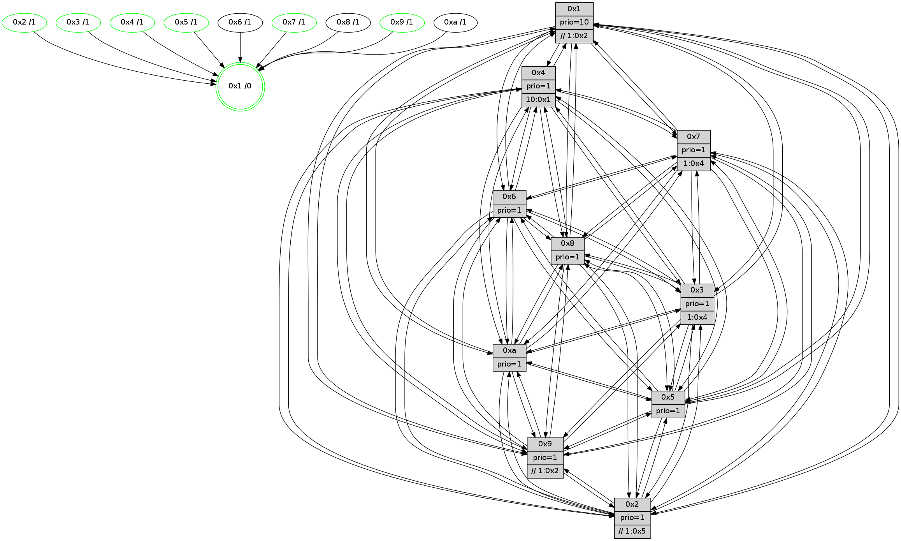

>> << IDX [start] -100 -25 -5 +0 +5 +25 +100 [815.35602808]
 Previous packets
----------------------------------------------------------------------
810.627241 beacon01(faad) #0 coord=01,02,03,04,05,06,07,0a,09,08 cycle=688.0ms assoc
-- color-indic=1 64 42 fb
810.637224 beacon02(faad) #0 coord=01,02,03,04,05,06,07,0a,09,08 cycle=688.0ms assoc 64 d1 ca
810.647224 beacon03(faad) #0 coord=01,02,03,04,05,06,07,0a,09,08 cycle=688.0ms assoc 64 ab 87
810.657224 beacon04(faad) #0 coord=01,02,03,04,05,06,07,0a,09,08 cycle=688.0ms assoc 64 dc 6d
810.667224 beacon05(faad) #0 coord=01,02,03,04,05,06,07,0a,09,08 cycle=688.0ms assoc 64 a6 20
810.677225 beacon06(faad) #0 coord=01,02,03,04,05,06,07,0a,09,08 cycle=688.0ms assoc 64 28 f7
810.687225 beacon07(faad) #0 coord=01,02,03,04,05,06,07,0a,09,08 cycle=688.0ms assoc 64 52 ba
810.697230 beacon0a(faad) #0 coord=01,02,03,04,05,06,07,0a,09,08 cycle=688.0ms assoc 64 23 b1
810.717230 beacon08(faad) #0 coord=01,02,03,04,05,06,07,0a,09,08 cycle=688.0ms assoc 64 d7 2b
810.728412 [Hello(6): seq=519 sym=2,3,5,4,7,9,8,10,1 sysInfo= stat=2:8,8,8,7/3:8,3,0,7/5:2,4,2,11/4:2,9,12,0/7:11,0,14,3/9:5,5,1,0/8:1,8,14,7/10:1,0,5,7/1:5,2,4,1]
810.731494 [Hello(1): seq=428 sym=4,2,9,5,10,3,8,6,7 sysInfo=coloring-mode-on,ColoringModeRequestCalled stat=4:5,6,0,0/2:1,8,9,9/9:3,14,14,1/5:2,5,3,3/10:13,9,7,8/3:14,11,6,0/8:9,9,8,8/6:1,3,8,7/7:9,13,15,11]
810.734216 [Color(7) seq=138 @0:0 prio=1 >1.@4,1.@6]
810.736135 [Hello(2): seq=515 sym=4,5,7,6,3,9,8,10,1 sysInfo=hasWarning stat=4:10,3,11,4/5:5,4,11,3/7:7,3,3,7/6:11,11,15,6/3:10,9,9,4/9:3,9,11,0/8:3,4,9,6/10:12,10,10,6/1:8,1,5,1]
810.739794 [Hello(5): seq=519 sym=7,6,4,3,1,9,8,10,2 sysInfo=hasWarning stat=7:5,3,2,6/6:0,8,0,7/4:1,8,5,5/3:13,3,7,7/1:9,3,10,1/9:10,10,12,0/8:15,0,9,6/10:1,7,6,1/2:2,8,2,0]
810.742792 [Hello(3): seq=519 sym=1,7,6,2,4,8,9,10,5 sysInfo= stat=1:1,4,12,0/7:1,0,11,5/6:10,11,7,8/2:0,3,13,8/4:10,2,8,5/8:6,3,11,4/9:14,8,14,7/10:0,3,12,7/5:10,4,11,9]
810.745939 [Color(2) seq=164 @0:0 prio=1 >>1.@5,1.@6,1.@7]
810.747660 [Color(4) seq=137 @0:0 prio=1]
810.751660 [Color(5) seq=172 @0:0 prio=1]
----------------------------------------------------------------------
811.415374 beacon01(faad) #0 coord=01,02,03,04,05,06,07,0a,09,08 cycle=688.0ms assoc
-- color-indic=1 64 fe fe
811.425355 beacon02(faad) #0 coord=01,02,03,04,05,06,07,0a,09,08 cycle=688.0ms assoc 64 6d cf
811.435356 beacon03(faad) #0 coord=01,02,03,04,05,06,07,0a,09,08 cycle=688.0ms assoc 64 17 82
811.445356 beacon04(faad) #0 coord=01,02,03,04,05,06,07,0a,09,08 cycle=688.0ms assoc 64 60 68
811.455357 beacon05(faad) #0 coord=01,02,03,04,05,06,07,0a,09,08 cycle=688.0ms assoc 64 1a 25
811.465357 beacon06(faad) #0 coord=01,02,03,04,05,06,07,0a,09,08 cycle=688.0ms assoc 64 94 f2
811.475358 beacon07(faad) #0 coord=01,02,03,04,05,06,07,0a,09,08 cycle=688.0ms assoc 64 ee bf
811.485361 beacon0a(faad) #0 coord=01,02,03,04,05,06,07,0a,09,08 cycle=688.0ms assoc 64 9f b4
811.505362 beacon08(faad) #0 coord=01,02,03,04,05,06,07,0a,09,08 cycle=688.0ms assoc 64 6b 2e
811.516542 [Hello(8): seq=463 sym=5,2,3,4,7,6,9,10,1 sysInfo=hasWarning stat=5:10,10,2,10/2:4,3,10,2/3:9,1,14,9/4:2,11,14,6/7:1,2,2,9/6:9,9,11,8/9:1,4,0,0/10:0,2,0,0/1:14,4,5,0]
811.520568 [Color(3) seq=160 @0:0 prio=1 >1.@4,1.@6,1.@7]
811.522278 [Color(1) seq=200 @0:0 prio=10 >>1.@6,1.@7]
811.523712 [Hello(4): seq=519 sym=5,7,6,2,3,9,8,10,1 sysInfo= stat=5:0,15,15,9/7:7,4,1,4/6:12,14,15,8/2:0,15,11,8/3:0,2,10,5/9:15,5,14,3/8:1,7,14,9/10:8,5,2,7/1:2,9,9,1]
811.529907 [Hello(10): seq=452 sym=6,2,3,8,9,5,7,4,1 sysInfo=hasWarning stat=6:3,9,15,3/2:11,4,10,2/3:3,6,8,6/8:13,4,11,8/9:2,4,1,0/5:13,8,0,11/7:6,5,0,5/4:10,14,6,6/1:10,6,9,1]
811.534902 [Hello(7): seq=519 sym=2,3,5,6,4,8,9,10,1 sysInfo=hasWarning stat=2:1,5,5,10/3:4,13,2,9/5:14,8,5,14/6:14,12,3,3/4:5,3,0,0/8:14,8,2,6/9:10,1,3,9/10:3,6,4,8/1:9,8,9,0]
811.538657 [Hello(9): seq=463 sym=2,5,3,4,7,6,8,10,1 sysInfo=hasWarning stat=2:4,13,10,0/5:4,9,10,2/3:6,13,9,9/4:3,10,11,6/7:1,6,4,7/6:6,3,13,6/8:3,12,4,1/10:0,1,0,0/1:4,1,9,1]
811.542743 [Color(9) seq=168 @0:0 prio=1 >>1.@6,1.@7,1.@8]
----------------------------------------------------------------------
812.203505 beacon01(faad) #0 coord=01,02,03,04,05,06,07,0a,09,08 cycle=688.0ms assoc
-- color-indic=1 64 2a cb
812.213488 beacon02(faad) #0 coord=01,02,03,04,05,06,07,0a,09,08 cycle=688.0ms assoc 64 b9 fa
812.223488 beacon03(faad) #0 coord=01,02,03,04,05,06,07,0a,09,08 cycle=688.0ms assoc 64 c3 b7
812.233489 beacon04(faad) #0 coord=01,02,03,04,05,06,07,0a,09,08 cycle=688.0ms assoc 64 b4 5d
812.243487 beacon05(faad) #0 coord=01,02,03,04,05,06,07,0a,09,08 cycle=688.0ms assoc 64 ce 10
812.253488 beacon06(faad) #0 coord=01,02,03,04,05,06,07,0a,09,08 cycle=688.0ms assoc 64 40 c7
812.263488 beacon07(faad) #0 coord=01,02,03,04,05,06,07,0a,09,08 cycle=688.0ms assoc 64 3a 8a
812.273494 beacon0a(faad) #0 coord=01,02,03,04,05,06,07,0a,09,08 cycle=688.0ms assoc 64 4b 81
812.293493 beacon08(faad) #0 coord=01,02,03,04,05,06,07,0a,09,08 cycle=688.0ms assoc 64 bf 1b
812.306565 [Hello(6): seq=520 sym=2,3,5,4,7,9,8,10,1 sysInfo= stat=2:9,9,8,7/3:9,4,0,7/5:3,5,2,11/4:3,10,12,0/7:12,1,14,3/9:6,6,1,0/8:2,8,14,7/10:2,0,5,7/1:6,3,4,1]
812.309646 [Hello(3): seq=520 sym=1,7,6,2,4,8,9,10,5 sysInfo= stat=1:1,5,12,0/7:2,0,11,5/6:10,11,7,8/2:0,4,13,8/4:11,3,8,5/8:7,3,11,4/9:15,9,14,7/10:1,3,12,7/5:10,5,11,9]
812.312932 [Color(7) seq=139 @0:0 prio=1 >1.@4,1.@6]
812.318513 [Hello(5): seq=520 sym=7,6,4,3,1,9,8,10,2 sysInfo=hasWarning stat=7:6,3,2,6/6:1,8,0,7/4:2,8,5,5/3:13,4,7,7/1:10,4,10,1/9:11,11,12,0/8:0,0,9,6/10:2,7,6,1/2:2,8,2,0]
812.321716 [Hello(2): seq=516 sym=4,5,7,6,3,9,8,10,1 sysInfo=hasWarning stat=4:11,4,11,4/5:5,5,11,3/7:8,3,3,7/6:12,11,15,6/3:10,10,9,4/9:4,10,11,0/8:4,4,9,6/10:13,10,10,6/1:9,2,5,1]
812.324844 [Color(2) seq=165 @0:0 prio=1 >>1.@5,1.@6,1.@7]
812.326892 [Color(5) seq=173 @0:0 prio=1]
812.328334 [Hello(1): seq=429 sym=4,2,9,5,10,3,8,6,7 sysInfo=coloring-mode-on,ColoringModeRequestCalled stat=4:6,7,0,0/2:2,9,9,9/9:4,15,14,1/5:3,6,3,3/10:14,9,7,8/3:15,11,6,0/8:10,9,8,8/6:1,3,8,7/7:10,14,15,11]
----------------------------------------------------------------------
812.991637 beacon01(faad) #0 coord=01,02,03,04,05,06,07,0a,09,08 cycle=688.0ms assoc
-- color-indic=1 64 96 ce
813.001619 beacon02(faad) #0 coord=01,02,03,04,05,06,07,0a,09,08 cycle=688.0ms assoc 64 05 ff
813.011618 beacon03(faad) #0 coord=01,02,03,04,05,06,07,0a,09,08 cycle=688.0ms assoc 64 7f b2
813.021621 beacon04(faad) #0 coord=01,02,03,04,05,06,07,0a,09,08 cycle=688.0ms assoc 64 08 58
813.031620 beacon05(faad) #0 coord=01,02,03,04,05,06,07,0a,09,08 cycle=688.0ms assoc 64 72 15
813.041619 beacon06(faad) #0 coord=01,02,03,04,05,06,07,0a,09,08 cycle=688.0ms assoc 64 fc c2
813.051621 beacon07(faad) #0 coord=01,02,03,04,05,06,07,0a,09,08 cycle=688.0ms assoc 64 86 8f
813.061627 beacon0a(faad) #0 coord=01,02,03,04,05,06,07,0a,09,08 cycle=688.0ms assoc 64 f7 84
813.071625 beacon09(faad) #0 coord=01,02,03,04,05,06,07,0a,09,08 cycle=688.0ms assoc 64 79 53
813.081624 beacon08(faad) #0 coord=01,02,03,04,05,06,07,0a,09,08 cycle=688.0ms assoc 64 03 1e
813.093126 [Hello(10): seq=453 sym=6,2,3,8,9,5,7,4,1 sysInfo=hasWarning stat=6:4,9,15,3/2:12,5,10,2/3:4,6,8,6/8:13,4,11,8/9:3,5,1,0/5:14,9,0,11/7:7,6,0,5/4:10,14,6,6/1:11,6,9,1]
813.095792 [Hello(8): seq=464 sym=5,2,3,4,7,6,9,10,1 sysInfo=hasWarning stat=5:11,11,2,10/2:5,4,10,2/3:10,2,14,9/4:3,11,14,6/7:2,3,2,9/6:10,9,11,8/9:2,5,0,0/10:1,2,0,0/1:15,5,5,0]
813.098519 [Color(3) seq=161 @0:0 prio=1 >1.@4,1.@6,1.@7]
813.101760 [Hello(7): seq=520 sym=2,3,5,6,4,8,9,10,1 sysInfo=hasWarning stat=2:2,6,5,10/3:4,13,2,9/5:15,9,5,14/6:15,12,3,3/4:5,3,0,0/8:14,8,2,6/9:11,2,3,9/10:3,6,4,8/1:10,8,9,0]
813.104646 [Hello(4): seq=520 sym=5,7,6,2,3,9,8,10,1 sysInfo= stat=5:1,0,15,9/7:8,5,1,4/6:13,14,15,8/2:1,0,11,8/3:0,2,10,5/9:0,6,14,3/8:1,7,14,9/10:9,5,2,7/1:3,9,9,1]
813.108740 [Hello(9): seq=464 sym=2,5,3,4,7,6,8,10,1 sysInfo=hasWarning stat=2:5,14,10,0/5:5,10,10,2/3:6,13,9,9/4:3,11,11,6/7:1,7,4,7/6:7,3,13,6/8:4,12,4,1/10:0,1,0,0/1:5,1,9,1]
813.113803 [Color(9) seq=169 @0:0 prio=1 >>1.@6,1.@7,1.@8]
813.115374 [STC(1) #0.91 tree-change,inconsistent-stability,stable,to-color d=0]
813.118607 [Color(1) seq=201 @0:0 prio=10 >>1.@6,1.@7]
----------------------------------------------------------------------
813.779767 beacon01(faad) #0 coord=01,02,03,04,05,06,07,0a,09,08 cycle=688.0ms assoc
-- color-indic=1 64 52 c0
813.789749 beacon02(faad) #0 coord=01,02,03,04,05,06,07,0a,09,08 cycle=688.0ms assoc 64 c1 f1
813.799750 beacon03(faad) #0 coord=01,02,03,04,05,06,07,0a,09,08 cycle=688.0ms assoc 64 bb bc
813.809749 beacon04(faad) #0 coord=01,02,03,04,05,06,07,0a,09,08 cycle=688.0ms assoc 64 cc 56
813.819749 beacon05(faad) #0 coord=01,02,03,04,05,06,07,0a,09,08 cycle=688.0ms assoc 64 b6 1b
813.829750 beacon06(faad) #0 coord=01,02,03,04,05,06,07,0a,09,08 cycle=688.0ms assoc 64 38 cc
813.839749 beacon07(faad) #0 coord=01,02,03,04,05,06,07,0a,09,08 cycle=688.0ms assoc 64 42 81
813.849754 beacon0a(faad) #0 coord=01,02,03,04,05,06,07,0a,09,08 cycle=688.0ms assoc 64 33 8a
813.869756 beacon08(faad) #0 coord=01,02,03,04,05,06,07,0a,09,08 cycle=688.0ms assoc 64 c7 10
813.880713 [STC(9)->1 #0.91 tree-change,inconsistent-stability,stable,to-color d=1]
813.882163 [Hello(6): seq=521 sym=2,3,5,4,7,9,8,10,1 sysInfo= stat=2:10,10,8,7/3:10,5,0,7/5:4,6,2,11/4:4,10,12,0/7:13,2,14,3/9:7,7,1,0/8:3,8,14,7/10:3,0,5,7/1:7,4,5,1]
813.884806 [Hello(1): seq=430 sym=4,2,9,5,10,3,8,6,7 sysInfo=coloring-mode-on,ColoringModeRequestCalled stat=4:6,7,0,0/2:2,9,9,9/9:4,15,14,1/5:3,6,3,3/10:15,9,7,8/3:15,11,6,0/8:11,9,8,8/6:1,3,8,7/7:10,14,15,11]
813.888202 [Hello(3): seq=521 sym=1,7,6,2,4,8,9,10,5 sysInfo= stat=1:2,6,13,0/7:3,1,11,5/6:10,11,7,8/2:1,5,13,8/4:12,3,8,5/8:8,3,11,4/9:0,10,14,7/10:2,3,12,7/5:11,6,11,9]
813.890655 [STC(10)->1 #0.91 tree-change,inconsistent-stability,to-color d=1]
813.892783 [Hello(5): seq=521 sym=7,6,4,3,1,9,8,10,2 sysInfo=hasWarning stat=7:7,3,2,6/6:2,8,0,7/4:3,8,5,5/3:13,5,7,7/1:11,5,11,1/9:12,12,12,0/8:1,0,9,6/10:3,7,6,1/2:2,8,2,0]
813.895618 [STC(5)->1 #0.91 tree-change,inconsistent-stability,stable,to-color d=1]
813.897451 [STC(4)->1 #0.91 tree-change,inconsistent-stability,stable,to-color d=1]
813.898863 [Color(5) seq=174 @0:0 prio=1]
813.901210 [STC(7)->1 #0.91 tree-change,inconsistent-stability,stable,to-color d=1]
813.902677 [STC(8)->1 #0.91 tree-change,inconsistent-stability,to-color d=1]
813.904209 [STC(3)->1 #0.91 tree-change,inconsistent-stability,stable,to-color d=1]
813.905551 [Color(7) seq=140 @0:0 prio=1 >1.@4,1.@6]
813.907350 [Hello(2): seq=517 sym=4,5,7,6,3,9,8,10,1 sysInfo=hasWarning stat=4:12,4,11,4/5:5,6,11,3/7:9,3,3,7/6:13,11,15,6/3:10,11,9,4/9:5,11,11,0/8:5,4,9,6/10:14,10,10,6/1:10,3,6,1]
813.910500 [STC(2)->1 #0.91 tree-change,inconsistent-stability,stable,to-color d=1]
813.911780 [STC(6)->1 #0.91 tree-change,inconsistent-stability,to-color d=1]
813.916421 [Color(2) seq=166 @0:0 prio=1 >>1.@5,1.@6,1.@7]
813.919194 [Color(4) seq=139 @0:0 prio=1 >10.@1,1.@2,1.@3,1.@6]
----------------------------------------------------------------------
814.567897 beacon01(faad) #0 coord=01,02,03,04,05,06,07,0a,09,08 cycle=688.0ms assoc
-- color-indic=1 64 ee c5
814.577880 beacon02(faad) #0 coord=01,02,03,04,05,06,07,0a,09,08 cycle=688.0ms assoc 64 7d f4
814.587881 beacon03(faad) #0 coord=01,02,03,04,05,06,07,0a,09,08 cycle=688.0ms assoc 64 07 b9
814.597880 beacon04(faad) #0 coord=01,02,03,04,05,06,07,0a,09,08 cycle=688.0ms assoc 64 70 53
814.607880 beacon05(faad) #0 coord=01,02,03,04,05,06,07,0a,09,08 cycle=688.0ms assoc 64 0a 1e
814.617881 beacon06(faad) #0 coord=01,02,03,04,05,06,07,0a,09,08 cycle=688.0ms assoc 64 84 c9
814.627881 beacon07(faad) #0 coord=01,02,03,04,05,06,07,0a,09,08 cycle=688.0ms assoc 64 fe 84
814.637886 beacon0a(faad) #0 coord=01,02,03,04,05,06,07,0a,09,08 cycle=688.0ms assoc 64 8f 8f
814.647884 beacon09(faad) #0 coord=01,02,03,04,05,06,07,0a,09,08 cycle=688.0ms assoc 64 01 58
814.657887 beacon08(faad) #0 coord=01,02,03,04,05,06,07,0a,09,08 cycle=688.0ms assoc 64 7b 15
814.669438 [Hello(4): seq=521 sym=5,7,6,2,3,9,8,10,1 sysInfo= stat=5:1,0,15,9/7:8,5,1,4/6:14,14,15,8/2:1,0,11,8/3:0,2,10,5/9:1,7,15,3/8:1,7,14,9/10:9,5,2,7/1:3,10,10,1]
814.672985 [Color(3) seq=162 @0:0 prio=1 >1.@4,1.@6,1.@7]
814.677015 [Hello(8): seq=465 sym=5,2,3,4,7,6,9,10,1 sysInfo=hasWarning stat=5:11,11,2,10/2:6,5,11,2/3:10,3,15,9/4:4,12,14,6/7:3,4,2,9/6:10,9,12,8/9:3,6,0,0/10:1,2,0,0/1:15,6,6,0]
814.679597 [Hello(7): seq=521 sym=2,3,5,6,4,8,9,10,1 sysInfo=hasWarning stat=2:3,7,6,10/3:4,13,2,9/5:15,9,5,14/6:0,12,4,3/4:6,4,0,0/8:14,8,2,6/9:12,3,4,9/10:3,6,4,8/1:10,9,10,0]
814.682257 [Hello(10): seq=454 sym=6,2,3,8,9,5,7,4,1 sysInfo=hasWarning stat=6:4,9,0,3/2:13,6,11,2/3:4,7,9,6/8:14,4,12,8/9:4,6,1,0/5:15,10,1,11/7:8,7,1,5/4:11,15,7,6/1:11,7,10,1]
814.687879 [Color(1) seq=202 @0:0 prio=10 >>1.@2,1.@3,1.@6]
814.690070 [Hello(9): seq=465 sym=2,5,3,4,7,6,8,10,1 sysInfo=hasWarning stat=2:6,15,11,0/5:6,11,11,2/3:7,13,10,9/4:3,12,12,6/7:1,8,5,7/6:8,3,14,6/8:5,12,5,1/10:1,1,1,0/1:6,2,10,1]
814.694181 [Color(9) seq=170 @0:0 prio=1 >>1.@2,1.@3,1.@6]